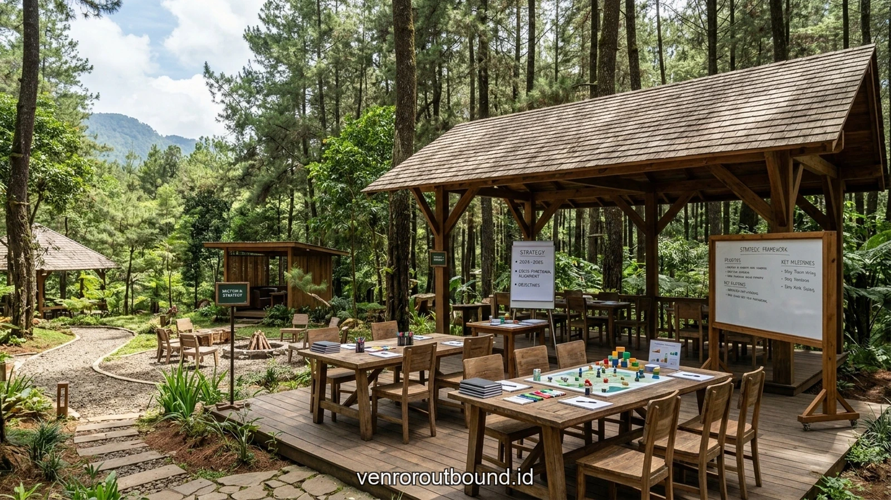

1. Urgensi Sinergi Lintas Divisi: Mengapa Sekat Silo Harus Dihancurkan
Jawaban singkat: Pengembangan Sinergi Inter-Departemen melalui aktivitas luar ruang secara terstruktur terbukti meningkatkan keterlibatan anggota tim hingga 40%. Vendor Outbound memfasilitasi program experiential learning tanpa stres yang merangsang komunikasi lintas divisi, melunturkan ego sektoral, dan membangun ketahanan psikologis tim menghadapi dinamika operasional perusahaan.
Dalam organisasi bisnis modern yang bertumbuh pesat, salah satu penyakit laten paling berbahaya adalah terciptanya sekat pemisah antardivisi atau yang kerap disebut sebagai fenomena silo mentality. Departemen pemasaran, teknologi informasi, operasional, hingga keuangan sering kali bekerja dengan target dan indikator kinerja utama (KPI) masing-masing, tanpa menyadari ketergantungan erat yang saling terkait satu sama lain. Ketika friksi operasional terjadi, kecenderungan untuk saling menyalahkan (*finger-pointing*) kerap kali mengorbankan kepuasan pelanggan dan ritme pertumbuhan perusahaan.
Mengatasi jurang komunikasi ini tidak cukup hanya dengan mengeluarkan surat edaran direksi atau mengadakan rapat koordinasi formal bulanan. Suasana ruang rapat formal yang dipenuhi beban hierarki dan ketegangan birokrasi justru sering mempertebal dinding pertahanan ego masing-masing manajer divisi. Sebaliknya, melalui program terpadu Outbound Sinergi Inter-Departemen di alam terbuka kawasan wisata pegunungan Batu Malang, peserta diajak melepaskan identitas jabatan formalnya dan masuk ke dalam ekosistem interaksi yang setara, cair, dan berbasis kebersamaan organik.
Pola kerja modern yang menuntut kecepatan tanggap sering kali terbentur oleh keengganan individu dalam mengambil risiko atau mengakui kesalahan sejak dini. Padahal, esensi mendasar dari kelincahan organisasi adalah kemampuan bereksperimen, belajar dari ketidaksempurnaan, dan mengulangi proses perbaikan (*continuous improvement*) dengan tempo yang terjaga. Di alam terbuka, prinsip ini dialami langsung saat strategi awal yang dirancang di atas kertas tidak berjalan sesuai rencana medan.
Interaksi langsung dengan tantangan alam juga berperan efektif dalam mereduksi ketegangan psikologis. Paparan udara segar pegunungan, pemandangan hijau pinus, dan stimulasi kinestetik memicu pelepasan hormon endorfin dan serotonin yang secara klinis terbukti menurunkan kadar kortisol pemicu stres kerja kronis. Kondisi mental yang rileks dan segar menjadi fondasi optimal bagi terbangunnya komunikasi yang jujur, empatik, serta bebas dari intrik politik kantor.
2. Analisis Hambatan Komunikasi Inter-Departemen dan Solusi Lapangan
Dalam memfasilitasi ratusan perusahaan nasional dan multinasional, tim konsultan Vendor Outbound mengidentifikasi tiga akar masalah utama yang kerap melumpuhkan kerja sama antarlini:
- Asimetri Informasi & Ketidaktahuan Proses: Staf suatu departemen sering tidak memahami kompleksitas prosedur kerja di divisi lain, sehingga menaruh ekspektasi yang tidak realistis terhadap waktu penyelesaian tugas (*turnaround time*).
- Ketiadaan Ruang Kontak Informal: Komunikasi yang hanya mengandalkan surat elektronik (*email*) atau pesan teks instan rentan menimbulkan misinterpretasi nada bicara (*tone of voice*) dan kecurigaan intrik.
- Defisit Kepercayaan Antarpribadi: Kolaborasi erat hanya bisa tumbuh di atas rasa saling percaya (*mutual trust*) bahwa rekan sejawat memiliki integritas dan komitmen yang sama terhadap visi korporat.
Melalui simulasi pemecahan masalah kelompok (*experiential problem-solving*) di lapangan, seluruh hambatan ini diurai secara alami. Modul permainan yang dirancang mengharuskan perwakilan dari tiap departemen bertukar peran dan saling bergantung satu sama lain untuk menyelesaikan tantangan bersama. Di sinilah empati fungsional mulai tumbuh secara konkret.
Lebih jauh lagi, simulasi berbasis alam menuntut kepemimpinan situasional yang dinamis. Seseorang yang terbiasa menjadi pengambil keputusan mutlak di ruang kantor mungkin harus mendengarkan arahan dari staf junior yang memiliki kepekaan navigasi lebih baik di lapangan. Pengalaman bertukar peran ini secara efektif meruntuhkan arogansi fungsional dan menumbuhkan rasa saling menghargai antarlini organisasi secara berkelanjutan.

Analisis SOP & Efisiensi Biaya: Menentukan Program Sinergi Inter Departemen Paling Aman
Panduan lengkap Project Manager dalam mengevaluasi SOP K3, efisiensi anggaran pelatihan, dan kualifikasi instruktur BNSP.
3. Tabel Analisis Komparatif Format Pembelajaran Tim Inter-Departemen
Untuk memudahkan penentuan format yang paling relevan dengan kebutuhan institusi Anda, tabel perbandingan berikut menyajikan matriks evaluasi aspek-aspek kunci yang perlu dipertimbangkan:
| Parameter Evaluasi | Rapat Koordinasi / Workshop Indoor | Program Outbound Sinergi Alam Terbuka |
|---|---|---|
| Kedalaman Interaksi Antarpersonal | Terbatas — kaku, terikat susunan tempat duduk & agenda formil | Sangat Dalam — spontan, cair, melibatkan kontak fisik dan emosional |
| Tingkat Pelepasan Ego Sektoral | Rendah — masing-masing pihak mempertahankan batasan KPI divisinya | Sangat Tinggi — keberhasilan regu menuntut pengorbanan peran individual |
| Ketahanan Resiliensi Menghadapi Krisis | Hanya diuji dalam tataran simulasi argumen verbal di atas kertas | Teruji Nyata — menghadapi rintangan medan, kelelahan fisik, dan tekanan waktu |
| Retensi Nilai Kolaborasi (3-6 Bulan) | Cenderung cepat pudar (15-20%) pasca kembali ke rutinitas kerja | Membekas Kuat (75-85%) sebagai memori kolektif yang mempersatukan |
Melalui visualisasi komparatif di atas, terlihat jelas bahwa perbedaan mendasar terletak pada kedalaman retensi memori dan keaslian respons emosional peserta. Dalam seminar kelas konvensional, peserta cenderung memberikan jawaban normatif yang sesuai dengan ekspektasi teori manajemen. Sebaliknya, saat dihadapkan pada keterbatasan waktu dan rintangan fisik nyata di alam bebas, karakter asli dan refleks kepemimpinan yang sesungguhnya akan muncul secara transparan.
Kondisi transparan inilah yang memberikan bahan baku paling otentik bagi master trainer untuk melakukan proses fasilitasi dan refleksi mendalam. Pembelajaran tidak lagi bersifat hafalan konsep, melainkan tertanam menjadi memori otot (*muscle memory*) dan kesadaran emosional yang siap diaktifkan kembali saat tim menghadapi krisis proyek nyata di lingkungan korporasi.
4. Protokol Keamanan dan Manajemen Fasilitasi Lapangan Terpadu
Mengelola ratusan talenta kunci perusahaan lintas divisi di medan luar ruang memerlukan pengawasan sistemik tanpa kompromi. Keselamatan fisik dan rasa aman psikologis (*psychological safety*) merupakan prasyarat mutlak agar peserta merasa nyaman berekspresi tanpa takut dihakimi atau mengalami cedera fisik.
Manajemen keselamatan dalam kegiatan outdoor modern tidak lagi sekadar menyediakan kotak P3K standar, melainkan menerapkan sistem manajemen risiko terpadu (*Integrated Risk Management System*). Sebelum agenda dimulai, tim inspektur K3 Vendor Outbound melakukan penelusuran rute dan asesmen kondisi lapangan secara berkala guna mengantisipasi perubahan kontur tanah akibat cuaca atau faktor alam lainnya.

Setiap fasilitator pendamping dibekali lisensi resmi BNSP yang mencakup kompetensi pertolongan pertama pada kecelakaan (P3K) darurat, mitigasi cedera otot, serta prosedur evakuasi medis darurat. Komunikasi antarpos terhubung melalui jaringan radio dua arah terenkripsi, memastikan setiap perkembangan kondisi peserta dapat dipantau secara langsung oleh tim komando pusat (*incident command post*).
Selain aspek keselamatan fisik, kenyamanan hidrasi dan nutrisi peserta diperhatikan dengan teliti. Penyediaan air mineral murni berkualitas, minuman elektrolit hangat khas pegunungan, serta hidangan bergizi seimbang yang higienis menjamin stamina para talenta perusahaan tetap bugar sejak sesi pembuka di pagi hari hingga agenda refleksi penutup di sore hari.
5. Alur Tahapan Eksekusi Simulasi Sinergi yang Berkesinambungan
Agar seluruh modul simulasi terserap menjadi pemahaman mendalam tanpa menciptakan kelelahan ekstrem, jadwal program dirancang mengikuti siklus andragogi yang seimbang:
- Tahap 1: Ice Breaking & Melting the Ice Barrier: Aktivitas pembuka yang melepaskan kecanggungan antardivisi lewat permainan tawa interaktif dan pembagian kelompok lintas departemen secara acak.
- Tahap 2: The Interdependence Challenge: Pos rintangan bertingkat di mana satu kelompok tidak dapat melangkah tanpa dukungan dan transfer sumber daya dari kelompok divisi lainnya.
- Tahap 3: Problem Solving Under Ambiguity: Skenario krisis mendadak yang menuntut perwakilan seluruh departemen menyatukan persepsi data dan membuat keputusan operasional kilat.
- Tahap 4: Integrative Grand Finale: Kolaborasi massal seluruh rombongan membentuk sebuah instalasi raksasa yang melambangkan satu kesatuan target organisasi.

Rekomendasi Paket Sinergi Inter Departemen Profesional Batu & Malang 2026: Fasilitas Terlengkap
Rincian proposal lengkap paket outbound sinergi inter-departemen di resort privat Batu Malang.
Konsistensi penjadwalan dan fleksibilitas durasi antarpos memungkinkan setiap peserta tetap fokus menyerap esensi pelatihan tanpa terburu-buru oleh tekanan waktu.
Pemberian jeda waktu refleksi (*reflection window*) selama 10 hingga 15 menit pascasimulasi pos memberikan kesempatan bagi otak peserta untuk mengendapkan pengalaman yang baru saja dilalui. Dalam fase ini, fasilitator mengajukan pertanyaan terbuka yang menstimulasi kesadaran metakognitif: mengapa strategi pertama gagal, faktor apa yang membuat kolaborasi berhasil, dan bagaimana pola interaksi tersebut mencerminkan hambatan kerja yang terjadi di kantor.
6. Parameter Evaluasi Keberhasilan Sinergi Pasca-Pelatihan
Investasi pengembangan organisasi yang efektif harus dapat dibuktikan melalui perubahan perilaku konkret di lingkungan kerja harian pasca-acara. Parameter pengukuran yang digunakan mencakup:
- Reduksi Waktu Penyelesaian Antar-Unit (*Lead Time*): Percepatan birokrasi persetujuan dokumen dan koordinasi proyek yang melibatkan lebih dari dua divisi.
- Peningkatan Kualitas Umpan Balik Karyawan: Kesediaan memberikan feedback konstruktif tanpa rasa canggung atau resistensi defensif.
- Tumbuhnya Inisiatif Kolaborasi Spontan: Karyawan proaktif membantu divisi lain saat mendeteksi adanya kemacetan operasional (*bottleneck*).

Paket Outbound Team Building Perusahaan Berdampak Nyata
Program pengembangan kerja sama tim terpadu untuk performa kerja prima.
Kombinasi evaluasi kuantitatif dan kualitatif memberikan gambaran menyeluruh terhadap dampak program terhadap budaya kerja perusahaan dalam jangka panjang.
Evaluasi berkelanjutan yang dilakukan pada rentang waktu 30 hingga 60 hari pascakegiatan menunjukkan bahwa organisasi yang secara konsisten menerapkan komitmen aksi (*action pledge*) pasca-outbound berhasil menekan angka pergantian karyawan (*turnover*) sukarela serta mempercepat penyelesaian target proyek tahunan secara signifikan.
7. Kesimpulan dan Rekomendasi Penguatan Budaya Kolaborasi
Membangun sinergi inter-departemen yang kokoh memerlukan keberanian manajerial untuk membawa tim keluar dari zona nyaman rutinitas kantor. Melalui pendekatan outbound alam terbuka yang terarah, aman, dan didampingi fasilitator profesional bersertifikat BNSP, perusahaan Anda sedang menanam fondasi budaya kerja yang tangkas, harmonis, dan memiliki daya lentur mental (*resilience*) tinggi dalam memenangkan persaingan bisnis modern.
Memasuki iklim bisnis yang kian kompetitif di tahun 2026, keunggulan organisasi tidak lagi semata-mata bertumpu pada kecanggihan perangkat lunak atau modal finansial, melainkan pada ketangkasan emosional dan kekompakan manusianya. Menghadirkan program luar ruang yang dirancang dengan landasan psikologi kelompok yang solid adalah langkah strategis terbaik untuk memupuk modal sosial korporat Anda.
Ingin Merancang Program yang Tepat Sasaran untuk Institusi Anda?
Diskusikan profil peserta, preferensi lokasi pegunungan asri di Batu Malang, dan modul simulasi yang dirancang khusus bersama tim ahli kami di +62 82211221909.
Hubungi Kami via WhatsAppPertanyaan Sering Diajukan (FAQ)

Arby Ardiansyah
Praktisi pengembangan SDM dan perancang program experiential learning dengan pengalaman lebih dari 8 tahun memfasilitasi ratusan kegiatan outbound korporat, BUMN, dan acara kebersamaan keluarga di seluruh Jawa Timur.